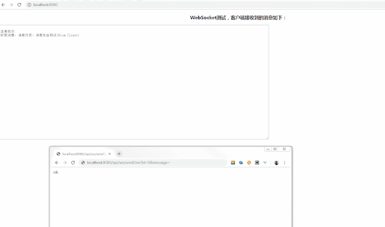

之前公司的某个系统为了实现推送技术，所用的技术都是Ajax轮询，这种方式浏览器需要不断的向服务器发出请求，显然这样会浪费很多的带宽等资源，所以研究了下WebSocket，本文将详细介绍下。
WebSocket是HTML5开始提供的一种在单个TCP连接上进行全双工通讯的协议，能更好的节省服务器资源和带宽，并且能够更实时地进行通讯。
WebSocket 使得客户端和服务器之间的数据交换变得更加简单，允许服务端主动向客户端推送数据，在WebSocket API中，浏览器和服务器只需要完成一次握手，两者之间就直接可以创建持久性的连接，并进行双向数据传输。
新建一个spring boot项目spring-boot-websocket，按照下面步骤操作。
<dependency>
<groupId>org.springframework.boot</groupId>
<artifactId>spring-boot-starter-websocket</artifactId>
</dependency>这个配置类检测带注解@ServerEndpoint的bean并注册它们，配置类代码如下：
@Configuration
public class WebSocketConfig {
/**
* 给spring容器注入这个ServerEndpointExporter对象
* 相当于xml：
* <beans>
* <bean id="serverEndpointExporter" class="org.springframework.web.socket.server.standard.ServerEndpointExporter"/>
* </beans>
* <p>
* 检测所有带有@serverEndpoint注解的bean并注册他们。
*
* @return
*/
@Bean
public ServerEndpointExporter serverEndpointExporter() {
System.out.println("我被注入了");
return new ServerEndpointExporter();
}
}这个处理类需要使用@ServerEndpoint，这个类里监听连接的建立关闭、消息的接收等，具体代码如下：
@ServerEndpoint(value = "/ws/asset")
@Component
public class WebSocketServer {
@PostConstruct
public void init() {
System.out.println("websocket 加载");
}
private static Logger log = LoggerFactory.getLogger(WebSocketServer.class);
private static final AtomicInteger OnlineCount = new AtomicInteger(0);
// concurrent包的线程安全Set，用来存放每个客户端对应的Session对象。
private static CopyOnWriteArraySet<Session> SessionSet = new CopyOnWriteArraySet<Session>();
/**
* 连接建立成功调用的方法
*/
@OnOpen
public void onOpen(Session session) {
SessionSet.add(session);
int cnt = OnlineCount.incrementAndGet(); // 在线数加1
log.info("有连接加入，当前连接数为：{}", cnt);
SendMessage(session, "连接成功");
}
/**
* 连接关闭调用的方法
*/
@OnClose
public void onClose(Session session) {
SessionSet.remove(session);
int cnt = OnlineCount.decrementAndGet();
log.info("有连接关闭，当前连接数为：{}", cnt);
}
/**
* 收到客户端消息后调用的方法
*
* @param message
* 客户端发送过来的消息
*/
@OnMessage
public void onMessage(String message, Session session) {
log.info("来自客户端的消息：{}",message);
SendMessage(session, "收到消息，消息内容："+message);
}
/**
* 出现错误
* @param session
* @param error
*/
@OnError
public void onError(Session session, Throwable error) {
log.error("发生错误：{}，Session ID： {}",error.getMessage(),session.getId());
error.printStackTrace();
}
/**
* 发送消息，实践表明，每次浏览器刷新，session会发生变化。
* @param session
* @param message
*/
public static void SendMessage(Session session, String message) {
try {
// session.getBasicRemote().sendText(String.format("%s (From Server，Session ID=%s)",message,session.getId()));
session.getBasicRemote().sendText(message);
} catch (IOException e) {
log.error("发送消息出错：{}", e.getMessage());
e.printStackTrace();
}
}
/**
* 群发消息
* @param message
* @throws IOException
*/
public static void BroadCastInfo(String message) throws IOException {
for (Session session : SessionSet) {
if(session.isOpen()){
SendMessage(session, message);
}
}
}
/**
* 指定Session发送消息
* @param sessionId
* @param message
* @throws IOException
*/
public static void SendMessage(String message,String sessionId) throws IOException {
Session session = null;
for (Session s : SessionSet) {
if(s.getId().equals(sessionId)){
session = s;
break;
}
}
if(session!=null){
SendMessage(session, message);
}
else{
log.warn("没有找到你指定ID的会话：{}",sessionId);
}
}
}目前大部分浏览器支持WebSocket，比如Chrome, Mozilla,Opera和Safari，在html页面进行websocket的连接建立、收消息的监听，页面代码如下：
<html>
<head>
<meta charset="UTF-8">
<title>websocket测试</title>
<script src="http://libs.baidu.com/jquery/2.0.0/jquery.min.js"></script>
<style type="text/css">
h3,h4{
text-align:center;
}
</style>
</head>
<body>
<h3>WebSocket测试，客户端接收到的消息如下：</h3>
<textarea id = "messageId" readonly="readonly" cols="150" rows="30" >
</textarea>
<script type="text/javascript">
var socket;
if (typeof (WebSocket) == "undefined") {
console.log("遗憾：您的浏览器不支持WebSocket");
} else {
console.log("恭喜：您的浏览器支持WebSocket");
//实现化WebSocket对象
//指定要连接的服务器地址与端口建立连接
//注意ws、wss使用不同的端口。我使用自签名的证书测试，
//无法使用wss，浏览器打开WebSocket时报错
//ws对应http、wss对应https。
socket = new WebSocket("ws://localhost:8080/ws/asset");
//连接打开事件
socket.onopen = function() {
console.log("Socket 已打开");
socket.send("消息发送测试(From Client)");
};
//收到消息事件
socket.onmessage = function(msg) {
$("#messageId").append(msg.data+ "\n");
console.log(msg.data );
};
//连接关闭事件
socket.onclose = function() {
console.log("Socket已关闭");
};
//发生了错误事件
socket.onerror = function() {
alert("Socket发生了错误");
}
//窗口关闭时，关闭连接
window.unload=function() {
socket.close();
};
}
</script>
</body>
</html>启动SpringBoot项目
本地浏览器打开首页http://localhost:8080/，出现WebSocket测试页面，同时后台打印连接的日志。
有连接加入，当前连接数为：1,sessionId=0通过上面日志可以看到客户端连接连接的sessionId，我测试时候sessionId是0，然后浏览器访问下面接口即可往客户端发送消息。
//参数说明： id：sessionID
//参数说明： message：消息内容
http://localhost:8080/api/ws/sendOne?id=0&message=你好Java碎碎念
到此SpringBoot整合WebSocket的功能已经全部实现，有问题欢迎留言沟通哦！
完整源码地址： https://github.com/suisui2019/springboot-study
推荐阅读
3.一分钟带你学会利用mybatis-generator自动生成代码！
5.SpringBoot系列-整合Mybatis（注解方式）
如果觉得文章不错，希望可以随手转发或者”在看“哦，非常感谢哈！
关注下方公众号后回复「1024」，有惊喜哦！
本文由博客一文多发平台 OpenWrite 发布！